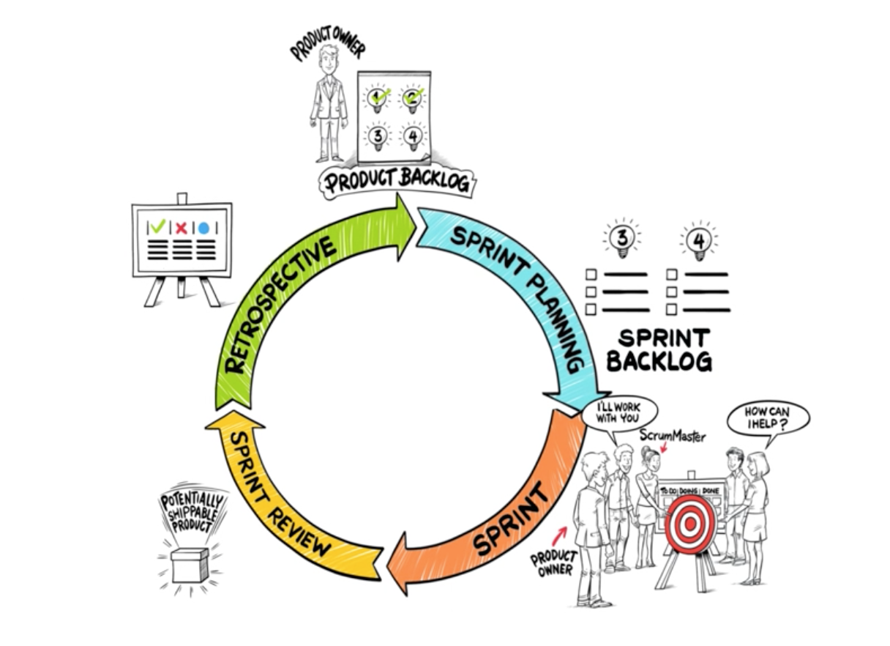

Projektgrupp är kompetent!
Projektgrupp är ineffektiv!
Det är inte lätt att arbeta i projekt.
Introduktion
Projektmetodik handlar om att bryta ner, strukturera, designa och tidskoordinera projektet i olika delmoment och steg. Med en bra projektmetodik kan du hantera dessa delmoment mer effektivt vilket gör projektet mer
tydligt, förutsägbart och det blir lättare att hålla tidsramar och en budget.
Projektmetodik är inte begränsat till att användas i arbetet utan kan även användas i arbetslivs situationer där du vill arbeta systematiskt för att kunna uppnå
uppsatta mål. Man brukar skilja på traditionella och agila projektmetodiker. I traditionella metodiker är fokus på planering med milstolpar och på beslut som ska genomföras. Denna typ av projektmetodik brukar vara mer statisk än den agila.
Agilt Arbetssätt
Agila projektmetoder handlar om att vara flexibel och anpassningsbar efter nya förändringar. Metodiken handlar också om att kunna återkoppla till projektets olika intressenter för att lättare kunna ändra planer efter nya förändringar och krav som kommer upp under projektets gång.
Om prioriteringen är oklar riskerar vi att utvecklarna först gör det som är lättbegripligt, enkelt och roligt, inte nödvändigtvis det som är viktigt. Ett annat vanligt fel är att göra flera saker samtidigt. Många tror att ju fler saker som påbörjas, desto fler saker avslutas. Tyvärr är det så att alla påbörjade projekt kostar pengar medan bara de avslutade projekten genererar pengar.
Många samtidiga projekt gör att utvecklare får svårare att fokusera och arbeta effektivt. Om teamet är stressade så är det lätt att tumma på kvaliteten , det är oftast en kortsiktig vinst som blir mer kostsam i slutändan.
Det är viktigt att ha transparens i projektet både inom teamet och för intressenterna. Fler ögon i teamet kan upptäcka eventuella fel inom projektet.
Det är även bra att vara transparent för intressenterna, så det kan föreslå förändringar i tid innan det blir för kostsamt att göra om förändringar i projektet.
Agila projektmetoder förespråkar om att bygga system som är inkrementella. Enkelt förklarat, systemet växer fram funktion för funktion istället för att göra allt på en gång. Exempelvis att man bygger färdigt en bil i taget istället för att jobba på 10 bilar samtidigt.
Scrum
Scrum is a simple framework that is focus on team collaboration and it helps team to build complex products easily. Scrum is not a methodology but it is a science experiment. The product is built in a time serie which is called "sprints". Scrum divides the sprints
in four stage:
- Sprint planning: Team has a plan for the next sprint
- Daily stand-up: A quickly meeting for team, 15-minute meeting
- Sprint demo: Team tells each other about what they have done in this sprint
- Sprint retrospective: Team reviews what is done and what is haven't done and make it better
The Scrum Team
- The product owner: who creates the product backlog or user stories (wish list) - what they need in the product.
- The development team: will complete the backlog from the product owner
- The ScrumMaster: helps the development team to understand Scrum theory, practices, rules, and values - keep the team reach the goal.
A Scrum framework
- A product owner creates a product backlog (user story) - create a wish list for developers.
- During the sprint, the team picks up the list from backlog and completes it.
- Team works on the task.
- A daily meeting to see the progress for the work and the ScrumMaster keeps the team focus on the goal.
- At the end of the sprint, the work should be ready and can delivery to a product owner.
- The sprint ends with a sprint review and retrospective. A sprint review happends when a product owner and the development team will meet and discuss about a backlog for example which items have been done or which items haven't done. As for sprint retrospective, it is an process that team will inspect what needs to be improve.
- The circle repeats for the next sprint

The Scrum framework in 30 seconds
Why Scrum is good for complex project?
Scrum framework benifits organization by increasing the quality of the final product. It copes better with the changes, controlling schedule and time.
Grupp Processes
Projektledande processer består av fem processgrupper:
- Initiering
- Planering
- Utför
- Övervakning
- Stängning
Initiating
Den stadgan svarar på den grundläggande frågan "Vad försöker vi göra?"
Alla projekt börjar med en idé för en produkt, service av ett annat önskvärt resultat. Det här är viktiga saker under hela processen: 1) rapportera alla behov och 2) göra en
rekommendation för att fixa dem.
Det första projektdokumentet är projektcharter. Dessa är nyckelkomponenter:
- Omfattning och resultat
- Resurser behövs och Mål
- Plan och tidslinje
- Kostnadsberäkning
- Risker och problem
Planering
Efter initiering planeras projektet till en lämplig detaljnivå. Det viktigaste målet är att planera tid, kostnader och resurser tillräckliga för projekt och att styra risken effektivt under projektet.
Precis som i den inledande processgruppen misslyckas
planeringen tillräckligt med projektets chans att lyckas.
Projektplanering innehåller följande:
- Utveckla schemat
- Välj teamet
- Skapa en arbetsfördelning
- Identifiera leveranser
- Planering för risk
Utför
Executing består av de processer som används för att slutföra det arbete som definieras i projekthanteringsplanen.
Det handlar om att uppnå projektets mål. Genomförandet omfattar samordning av människor och resurser samt integration och genomförande
av projektaktiviteter.
Övervakning
Övervakningsprocessen innebär att man hanterar och spårar projektet. Potentiella problem kan snabbt identifieras för laget om korrigerande åtgärder ska genomföras. Projekthanteringsplanen används för detta ändamål.
Övervakning inkluderar följande:
- Var står vi emot var vi borde vara?
- Hur kan vi komma tillbaka på rätt spår?
- Vad påverkas av denna förändring?
Stängning
Projektlåsning är en viktig del av projektledning som ibland förbises. Att slutföra ett projekt innebär att alla aktiviteter motsvarar alla processgrupper, löser upp projektteamet och skriver projektet med kunden.
Vid denna tidpunkt är det viktigt
att veta hur bra projektet har utfört. Denna uppgift är klar med hjälp av projektets slutrapport. Rapporten kommunicerar hur bra projektet har utfört mot sitt ursprungliga affärssystem, kvalitetsåtgärder, kostnad.
Roller
beställaren
Beställaren är den som beställer produkten, kan vara en avdelningschef som eller ett företag som beställt en produkt. Beställaren bestämmer vad som ska göras, medans projektdeltagarna själva bestämmer hur de ska göra det. Beställaren har också ansvar
att se till att formella beslut följs. När beställaren är klar med sitt tar projektledaren över ansvaret för projektet.
Styrgrupp
Är de som tar de avgörande besluten i ett projekt. Där kan beställaren både ingå och ensam vara styrgrupp. Om beställaren inte ingår i styrgruppen så har dennas ordförande ansvar att göra avstämningar med beställaren.
Projektledare
Tar emot beställningen från beställaren och har sedan ansvaret att driva projektet framåt samt når de uppsatta målen.
Delprojektledare
Ansvarar för ett delprojekt, från beställning till avslut. Behövs inte alltid utan endast om projektet får ett delmoment där det behövs en ansvarig person.
Projektdeltagarna
Är de som arbetar med projektet. Kan jobba enligt den agila modellen, som är vanlig i Sverige. Ansvarar för att uppgifter blir lösta enligt tidsplanen.
Sakkunnig
En sakkunnig person är någon som både kan ingå i projektet men kan också vara en person med stor kunskap som man anlitar när behov uppstår. Ifall gruppen saknar kunskap om ett specifikt ämne så kan en sakkunnig användas för att täcka upp den kunskap
som saknas. Bistår med sin expertis till skillnad från en referensgrupp som mera visar om produkten fungerar som man vill.
Referensgrupp
Ett bra hjälpmedel för många projekt. Referensgruppen har ett användarfokus och fungerar som ett bollplank för projektgruppen. Kan användas för att testa att en produkt fungerar och används som det var tänkt.
Intern mottagare
Kallas den eller de som tar över ansvaret för projektet när detta är avslutat. Ser till att slutprodukten implementeras som det var tänkt och kan t.ex. utbilda personal i att använda den nya produkten.
Resursägare
Är chefer över de som arbetar i projektet. Dessa ansvarar för att projektet får deltagare med rätt kompetens samt besluta om hur mycket tid deltagarna har att lägga i projektet.
Allmän info
Inför ett projekt så är det väldigt praktiskt om man redan innan vet vilken roll man har samt vad som förväntas av en. Det kan vara en simpel sak som att se till att det finns kaffe/te, till att veta vad de olika deltagarna har för styrkor och expertis.
Att redan i planeringsfasen bestämma vilka roller deltagarna har underlättar och effektiviserar arbetet. Det kan också behövas ta formella beslut i samrådan med till exempel facket eller en nämnd. Planering är väldigt viktigt för att projektet ska
flyta på och ju fler problem man reder ut innan projektet startar desto mer tid kan deltagarna lägga på projektet.
Konflikthantering
“Det finns ingen universallösning på konflikter.”
- Definiera vad som orsakar konflikten i teamet.
- Ta upp problemet direkt.
- Identifiera grundorsaken till problemet och analysera på vilket sätt det går att förbättra situationen.
- Förbered dig, ta reda på fakta och var specifik.
- Ge specifika exempel på hur liknande konflikter har lösts tidigare och hur dessa utmaningar i slutändan har ökat teamets styrkor och engagemang.
- Ha en positiv attityd.
- Försök att ha en positiv attityd till alla i teamet. Om teamet har en svår person, lyft fem styrkor som han/hon har och visa teamet hur dessa styrkor kan vara till nytta för teamets mål.
- Tänk dig in i den andra personens situation.
- Håll dig till fakta, låt inte känslorna styra.
- Undvik att kritisera och döma ut andras idéer och åsikter.
- Fokusera på hur negativa personers beteende har påverkat teamets resultat istället för på personliga meningsskiljaktigheter.
- Lägg fram fakta och bevis - ge förslag och alternativ.
- Fokusera på problemet istället för på personen.
- Ge förslag på genomförbara lösningar och fråga efter teamets åsikter eller alternativ.
- Avsluta mötet i en positiv anda, upprepa målen.
- Lägg fram ett vin-vin-förslag och försäkra dig om att alla känner att de andra har lyssnat på dem och respekterar deras synpunkter.
- Ge feedback så att alla känner samhörighet med teamet och är delaktiga i framtida mål.
- Uppmuntra teamet att diskutera andra potentiella utmaningar.
Källa: https://www.dalecarnegie.se/assets/397/7/Team_conflict_resolution_strategies_041424_swedish.pdf
Psykologi
Gruppsykologin kan man enkelt dela upp i två delar, stödjande klimat och försvarsinriktat klimat. Termen psykiskt klimat har formulerats för att ge associationer till det fysiska klimatet. Det psykiska klimatet har en inverkan på individens trivsel och
engagemang och är därför betydelsefullt rent tankemässigt och även som känslo- och viljemässigt.
Stödjande klimat
- Vänlig och accepterande attityd
- Trivs ihop trots meningsskiljaktigheter
- Inställda på gemensam problemlösning
- Individernas olikheter ses som en tillgång
- Man känner sig trygg och kan i och med detta släppa på försvarsattityder och använda en större del av sin personlighet i sitt arbete
- Ett humoristiskt förhållningssätt
Försvarsinriktat klimat
- Man är på sin vakt
- Rädd för personliga påhopp
- Värnar svartsjukt om sina egna idéer
- Man granskar nya idéer med stor logisk klarhet och håller de inte måttet så förkastas gärna både idé och person vilket ofta leder till att gruppmedlemmarna censurerar sina åsikter
- Kritik som ges är oftast av negativ art
- Man hänger gärna upp sig vid det dåliga i ett förslag i stället för att se potentiella möjligheter som kan finnas i de mest galna idéer
- Den humoristiska inställningen ses som oseriös
- Ofta förekommer kommentarer med sarkasmer, gliringar och dold kritik
Det psykiska klimatet kan man se som gruppens grundförutsättningar för att kunna nå sina mål. I det försvarsinriktade klimatet så är det svårt och jobba. Det är lätt att det uppstår konflikter och att gruppdeltagarna har problem att slappna av och
få fram kreativa idéer. Gruppen med stödjande klimat upplever deltagarna arbetsglädje, gemenskap, engagemang och kan lägga odelad energi på sitt deltagande.